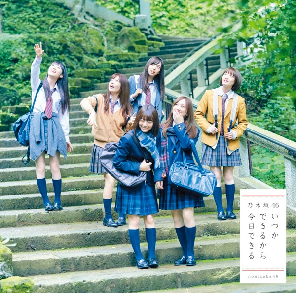

サカミチ
サカミチMy ruleまいるーる

初収録リリース「いつかできるから今日できる」のジャケット
乃木坂46
発売日：2017-10-11
収録：いつかできるから今日できる（19thSG）
種別：アンダー曲
センター：樋口日奈
作曲：藤田卓也
編曲：藤田卓也
ライブ披露：54件
フォーメーション
上が後列、下が前列です。色付きがセンター。（参考データに基づく）
相楽伊織
 佐々木琴子
佐々木琴子 伊藤かりん
伊藤かりん 川後陽菜
川後陽菜 川村真洋
川村真洋 和田まあや
和田まあや 伊藤純奈
伊藤純奈 能條愛未
能條愛未 鈴木絢音
鈴木絢音 山崎怜奈
山崎怜奈斎藤ちはる
 渡辺みり愛
渡辺みり愛 樋口日奈
樋口日奈 寺田蘭世
寺田蘭世参加メンバー（14名）
川後陽菜、川村真洋、斎藤ちはる、能條愛未、樋口日奈、和田まあや、伊藤かりん、伊藤純奈、相楽伊織、佐々木琴子、鈴木絢音、寺田蘭世、山崎怜奈、渡辺みり愛
この曲が披露されたライブ（54件）
新しい順に20件まで表示しています（全54件）。
同じリリースの曲
いつかできるから今日できる、不眠症、まあいいか？、失恋お掃除人、My rule、僕の衝動、新しい花粉 〜ミュージカル「見知らぬ世界」より〜